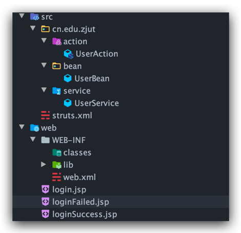
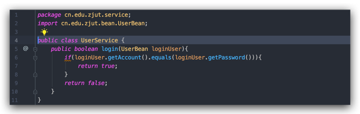
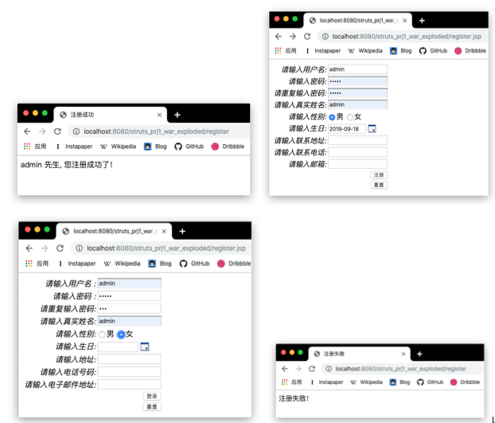

包含Struts 2知识梳理、实验总结、实验步骤三方面的总结。
知识梳理
1、Struts2 是从 WebWork 框架上发展起来的 MVC 框架；
2、FilterDispatcher 是 Struts2 中的核心控制器，客户端对服务器端的请求将被 FilterDispatcher 过滤；若请求需要调用某个 Action，则框架将根据配置文件struts.xml，找到需要调用的 Action 类；
3、Action 类是一个符合一定命名规范的 JavaSE 类，作为业务控制器使用； Action
中的 execute()方法用于调用 Model 层的业务逻辑类，并根据返回结果决定页面导航；
4、若 Action 类中需要使用表单提交的请求参数，那么必须在 Action 类中声明与
表单域的名字对应的变量，并为变量提供 getters/setters 方法；
5、Action 类需要在 struts.xml 中进行配置才能使用；
6、编译运行基于 Struts2 框架的 Web 工程，需要导入 struts2 的 8 个核心 jar 包：
| 文件名 | 说明 |
|---|---|
| struts2-core-2.3.15.1.jar | Struts 2 框架的核心类库 |
| xwork-core-2.3.15.1.jar | XWork 类库，Struts 2 的构建基础 |
| Ognl-3.0.6.jar | Struts 2 使用的一种表达式语言类库 |
| freemarker-2.3.19.jar | Struts 2 的标签模板使用类库 |
| javassist-3.11.0.GA.jar | 代码生成工具包 |
| commons-lang3-3.1.jar | Apache 语言包，是 java.lang 包的扩展 |
| commons-io-2.0.1.jar | Apache IO 包 |
| commons-fileupload-1.3.jar | Struts 2 文件上传依赖包 |
7、使用 Struts2 标签的形式来表达页面逻辑，可以尽量避免在视图中使用 Java 代码，让逻辑与显示分离，提高视图的可维护性；
8、Struts2 标签库的主要 tld 文件为 struts-tags.tld， 在 struts2-core-2.3.15.1.jar 包中， 另一个与 Ajax 相关的标签库 tld 文件为 struts-dojo-tags.tld，在 struts2-dojo -plugin-2.3.15.1.jar 包中；
9、Struts2 标签的使用步骤和使用 JSTL 相同，只需在 JSP 页面中使用 taglib 指令 引入标签库中 tld 文件的 uri， 并指定前缀即可，例如： <%@ taglib prefix="s" uri="/struts-tags"%>；
10、根据 Struts2 标签的主要作用，可以将其分为：用于生成页面元素的 UI 标签、 用于实现流程控制的控制类标签、用于控制数据的数据标签和用于支持Ajax的标签。
11、通过将不同语言版本的字符保存在属性文件中，Struts2 的国际化机制能够在不需要修改程序主体的前提下，实现不同语言版本的应用；
12、在 Web 应用中选择需要进行国际化的内容，不在页面中直接输出该信息，而是通过 Struts2 标签输出一个键值，该键值在不同语言环境下对应不同的字符串；如：<s:textfield name="loginUser.account" lable="请输入用户名"/>代码中的“请输入用户名”是需要国际化的内容,将其以键值代替为<s:textfield name="loginUser.account" key="login.account.lable"/>
13、需要进行国际化的内容以键值对（key=value） 的形式写入 Struts2 的国际化资源文件中，如login.account.lable=请输入用户名”；该资源文件名可以自定义，但是后缀必须是 properties；资源文件应放在 Web 应用的类加载路径下； 每一个语言版本需要创建一个资源文件；
14、通过 Struts2 的配置文件 struts.properties 来配置资源文件的基础名，若资源文 件的基础名为 message，则 message_zh_CN.properties 是对应的中文资源文件， message_en_US.properties 是对应的美国英语资源文件；
15、浏览器将根据其默认的语言版本，自动调用相应语言的资源文件，从而在页面中展示不同的语言效果。
实验总结
1、实验中各个文件的作用：
(1)jsp页面：负责展示视图
(2)Action类：负责处理业务逻辑
(3)Service类：用于实现登录逻辑
(4)JavaBean：用于定义用户信息
(5)Filter：起中央控制器作用的过滤器
(6)struts.xml：核心配置文件
2、Struts2 应用中从请求到响应的完整流程
客户端首先向Action发送一个请求Request,Container通过web.xml映射请求，并获得Controller的名字；Container调用控制StrutsPrepareAndExecuteFilter；Controller通过ActionMapper获得Action的信息，调用ActionProxy；ActionProxy读取struts.xml文件获取action和interceptor stack的信息，把request请求传递给ActionInvocation；ActionInvocation依次调用action和interceptor；根据action的配置信息，产生result，Result信息返回给ActionInvocation，产生一个HttpServletResponse响应，产生的响应行为发送给客户端。
3、MVC框架体现：
Model：JavaBean、Action类
View：JSP页面
Controller：FilterDispatcher
4、表单参数与 Action 属性的赋值关系
表单元素的action属性值对应了action的name属性值，Action只是一个逻辑控制器，他不直接对请求者生成任何响应，而是通过result子元素将指定的返回值呈现给客户端，如返回字符串为success则跳转至loginSuccess.jsp页面.
5、Action 的 execute() 方法的作用和特点
作用：处理业务逻辑
特点：无参数；不需要实现或者继承任何接口或者父类；execute方法一定要返回String类型的对象,每一个字符串都可以对应一个跳转的页面。
6、struts.xml 里各元素及其属性的作用
(1)package：管理Action、拦截器等核心组件。包含作为包名的name属性、用于继承的extends属性、用于设置命名空间的namespace属性、设置为抽象包的abstract属性。
(2)action元素：定义与Action操作有关的一系列配置信息。包含作为Action名的name属性、具体处理请求类的class属性、指定调用Action中放发明的method属性、指定使用Action类型转换器converter属性。
(3)result元素：将Action类返回的字符串转发给对应的是图，实现逻辑视图和物理视图资源的映射。包含制定配置逻辑视图名的name属性、指定结果类型的type属性。
(4)constant元素：改变Struts2的一些默认行为。包含指定框架功能的name属性、与name配合使用的value属性。
(5)interceptors元素：定义拦截器集合的元素
(6)interceptor元素：用于配置拦截器。包含指定拦截器逻辑名称的name属性和指定具体处理拦截类的class属性。
(7)interceptors-ref元素：在某个action中引用拦截器。
(8)interceptors-stack元素：定义拦截器栈
7、Struts2 中标签及其属性的作用和用法：
(1)form标签：生成表单元素。包含提交Action名字的action属性、命名空间namespace属性、定义GET/POST的method属性等
(2)textfield标签：用来输入一小段文字。包含定义可输入最大长度值的maxlength属性、定义字段尺寸size属性、用于标示元素的id属性等
(3)password标签：默认不显示输入内容的textfield。包含确定是否显示内容的showPassword属性、字段最大长度maxlength属性、定义字段尺寸size属性等
(4)if/elseif/else标签：通过逻辑值控制流程。包含决定标签内容是否显示的test属性、标示元素id的id属性。
(5)iterator标签：用于遍历集合元素。包含产生IteratorStatus对象实例的status属性、标示元素id的id属性等
8、配置文件 struts.properties 的作用
定义了Struts 2框架的大量属性，开发者可以通过改变这些属性来满足应用的需求。其中struts.configuration属性指定加载Struts 2配置文件的配置文件管理器。struts.locale属性指定Web应用的默认Locale。struts.i18n.encoding指定Web应用的默认编码集。
实验步骤
基础实验
1、登录 http://struts.apache.org/download.cgi 站点，下载 Struts2 的最新版（Full Distribution）；
2、新建 Web 工程 struts-prj1；
3、将 Struts2 中的 8 个核心包增加到 Web 应用中，即复制到“%workspace%
struts-prj1\WebContent\WEB-INF\lib”路径下；
4、在 struts-prj1 中新建 login.jsp 页面，作为用户登录的视图（代码片段如下）， 注意表单（form）中 action 属性的值，注意用户名与密码输入框中 name 属性的值；
5、在 struts-prj1 中新建 loginSuccess.jsp 和 loginFail.jsp 页面，分别作为登录成功 或登录失败的视图，在页面中显示“登录成功”或“登录失败”；

6、在 struts-prj1 中新建 cn.edu.zjut.bean 包，并在其中创建 UserBean.java，用于记录登录用户信息，注意该 JavaBean 中属性名的写法；

7、在 struts-prj1 中新建 cn.edu.zjut.service 包，并在其中创建 UserService.java， 用于实现登录逻辑，为简化登录逻辑，将登录成功的条件设置为：用户名和密码相同

8、在 struts-prj1 中新建 cn.edu.zjut.action 包，并在其中创建 UserAction.java，调 用登录逻辑，并根据登录结果不同而返回不同的内容，注意该 Action 中的属性名及相应的 getters 和 setters 方法、execute()方法及返回值；

9、在工程 struts-prj1 的 src 目录中创建 struts.xml 文件，用于配置 Action 并设置 页面导航，注意 action 标签中 name 属性和 class 属性的值， 以及 result 子标签的属性；

10、编辑 Web 应用的 web.xml 文件，增加 Struts2 核心 Filter 的配置；

11、将 struts-prj1 部署在 Tomcat 服务器上；
12、通过浏览器访问 login.jsp 页面，并记录运行结果；

提高实验
1、为能使用与 Ajax 相关的标签，将 Struts2 中的 struts2-dojo-plugin-2.3.15.1.jar 包增加到工程 struts-prj1 中，即复制到%workspace%struts-prj1\WebContent\ WEB-INF\lib路径下，刷新工程；

2、在工程 struts-prj1 中增加用户注册功能，新建 register.jsp 页面作为用户注册的 视图，页面使用 Struts2 的 UI 标签来生成表单元素，包括用户名、密码、确认密码、真实姓名、性别、生日、联系地址、联系电话和电子邮箱

3、在 struts-prj1 中新建 regFail.jsp 页面，作为注册失败的视图，在页面中显示“注册失败”；
4、在 struts-prj1 中新建 regSuccess.jsp 页面，作为注册成功的视图，使用 Struts2 的数据标签和控制标签来生成注册成功的信息，并将登录用户信息保存在会话范围内
5、修改 UserBean.java，增加属性用于记录注册用户信息

6、修改 UserService.java，增加用户注册逻辑，为简化注册逻辑，将注册成功的条件设置为：用户名、密码和确认密码相同，而且不为空字串；

7、修改 UserAction.java 中的 execute()方法，参照基础实验部分写入代码，用于调用注册逻辑，并根据注册成功与否而返回不同的内容；

8、修改 struts.xml 文件，对用户注册进行配置并设置页面导航；

9、将 struts-prj1 重新布署在 Tomcat 服务器上，通过浏览器访问 register.jsp 页面， 并记录运行结果；

拓展实验
1、在工程 struts-prj1 的 src 目录下新建一个 cn.edu.zjut.local 包，把所有的资源文件放置其中，如：message_zh_CN.properties、message_en_US.properties 等；

2、将工程 struts-prj1 中用户登录模块的三个 JSP 页面进行国际化处理，选择需要进行国际化的内容，以键值对的形式写入资源文件中
3、使用 JDK 中的 native2ASCII 工具，将 message_zh_CN.properties 重新编码，将中文字符都转化为 unicode 码，从而避免乱码问题；
4、在工程 struts-prj1 的 src 目录中创建 struts.properties 文件，通过它加载资源文件,或者在JSP页面中临时加载资源文件

5、修改 login.jsp、loginSuccess.jsp 和 loginFail.jsp 页面，通过 Struts2 标签实现国际化；
6、将 struts-prj1 重新布署在 Tomcat 服务器上；
7、设置浏览器的首语言选项（如下图所示），通过浏览器访问 login.jsp 页面， 观察并记录运行结果；

8、尝试修改用户注册模块，实现国际化，并记录运行结果。


注册中文页面

注册英文页面